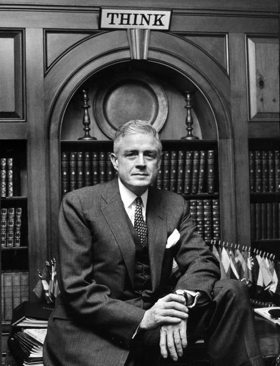

Born in February 17, 1874, Campbell,N. Y; died 1956, the towering figure whose lengthening shadow was IBM,which he reluctantly allowed to be dragged from punched cards to computing,- creator of IBM's motto "Think"
The son of a lumber dealer, Watson studied at the Elmira (New York) School of Commerce and then worked as a salesman, first in a retail store and then for a small cash register company. In 1895 Watson joined the sales staff of the National Cash Register Company in Dayton, Ohio, and he eventually rose to the post of general sales manager of the company under the tutelage of its president, John Henry Patterson. In 1912 Patterson involved Watson in an illegal antitrust scheme that resulted in convictions for both men, later overturned. Watson left the National Cash Register in 1913.In 1914 Watson became president of the Computing-Tabulating-Recording Company, a maker of electrical punch-card computing systems and other products; the company changed its name to International Business Machines Corporation in 1924. An exceptional salesman and organizer, Watson assembled a highly motivated, well-trained, and well-paid staff. He gave pep talks, enforced a strict dress code, and posted the now famous slogan “Think” in company offices. Coupled with an aggressive research and development program, those efforts enabled IBM to dominate its market. Watson aggressively pursued international trade in the 1930s and ’40s, extending IBM’s virtual monopoly of the business machines industry worldwide. In 1952 he turned the IBM presidency over to his son, Thomas, Jr., while retaining the post of chairman. By the time of Watson’s death four years later, the company (which had 235 employees in 1914) employed 60,000 people and had 200 offices throughout the country, with factories and assembly plants around the world.
| Year | Work |
|---|---|
| 1895 | Sales staff of the National Cash Register Company in Dayton, Ohio |
| 1914 | President of the Computing-Tabulating-Recording Company(IBM) |